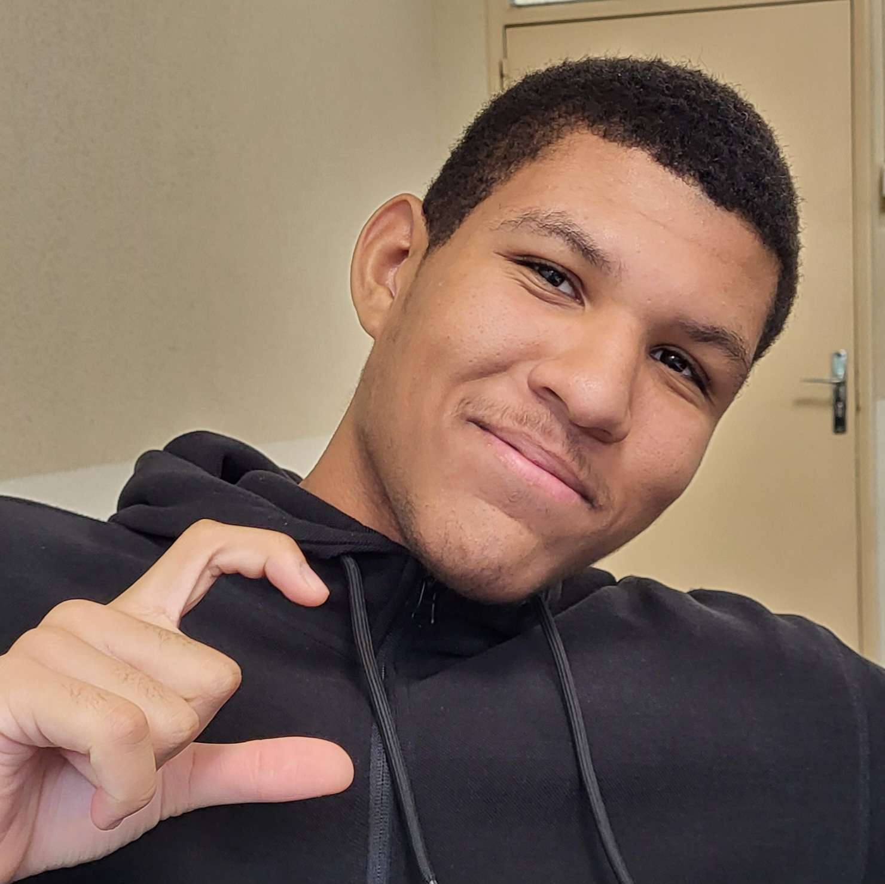
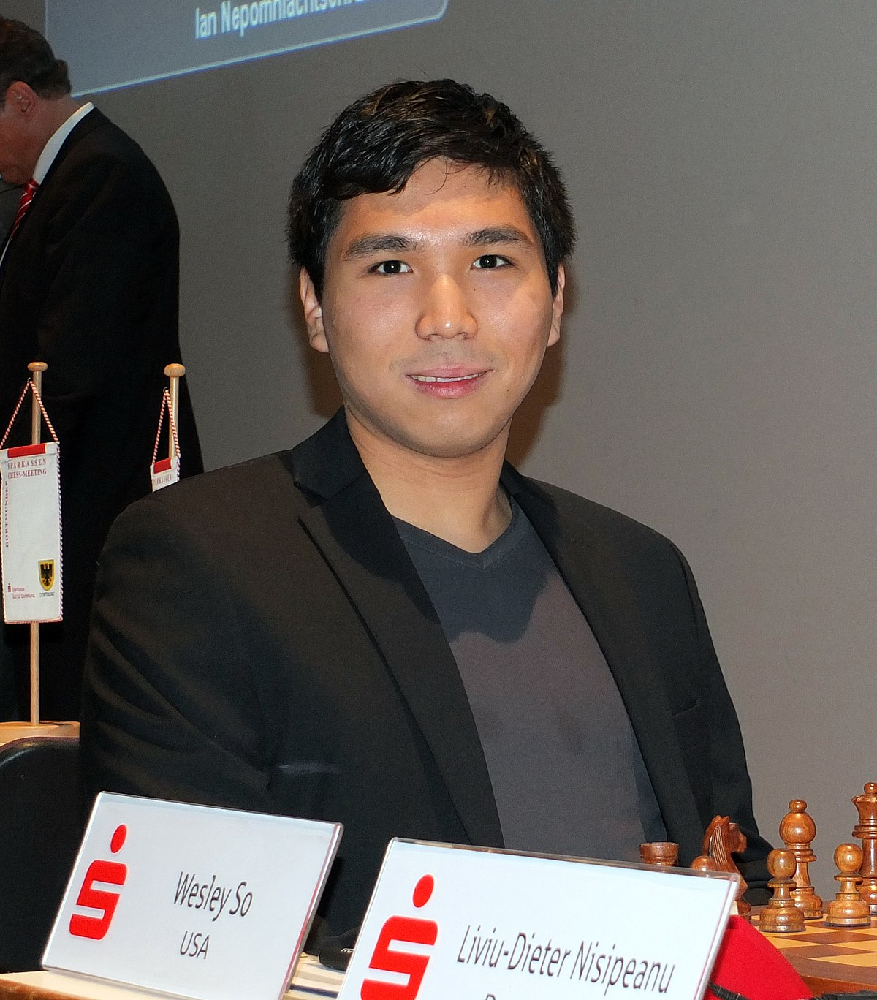

| Noms | Age | ELO | Nationalité |
|---|---|---|---|
| Magnus Carlsen | 30 | 2847 |  |
| Wesley So | 27 | 2770 | |
| Fabiano Caruana | 28 | 2767 |  |
| Ding Liren | 28 | 2760 |  |
| Maxime Vachier-Lagrave | 30 | 2758 |  |
| Levon Aronian | 38 | 2758 | |
| Shakhriyar Mamedyarov | 36 | 2756 |  |
| Teimour Radjabov | 33 | 2756 | |
Nous allons désormais nous concentrer sur les 3 meilleurs joueurs d'Echecs et leur histoire
Mehdi SEBBAK
Ce bel homme Français est considéré dans le milieu comme le plus fort du domaine des Echecs, malgré le fait qu'il ne figure pas dans le classement élo par modestie, il prouva à de multiples reprises qu'il est le meilleur. De plus il est vraiment très aimable.
Mehdi SEBBAK
Ce bel homme Français est considéré dans le milieu comme le plus fort du domaine des Echecs, malgré le fait qu'il ne figure pas dans le classement élo par modestie, il prouva à de multiples reprises qu'il est le meilleur. De plus il est vraiment très aimable.
Magnus CARLSEN

Magnus Carlsen est un joueur d'échecs norvégien né le 30 novembre 1990 à Tønsberg. Il a remporté le championnat du monde plusieurs fois. Il est considéré comme le meilleur joueur d'échecs derrière le grand SEBBAK Mehdi.
Wesley SO
Wesley So est un joueur d'échecs américano-philippin né le 9 octobre 1993 à Bacoor. Il a obtenu le titre de grand maître international en 2008. Il a remporté le championnat des États-Unis en 2017 et 2020 et le championnat du monde d'échecs en 2021.